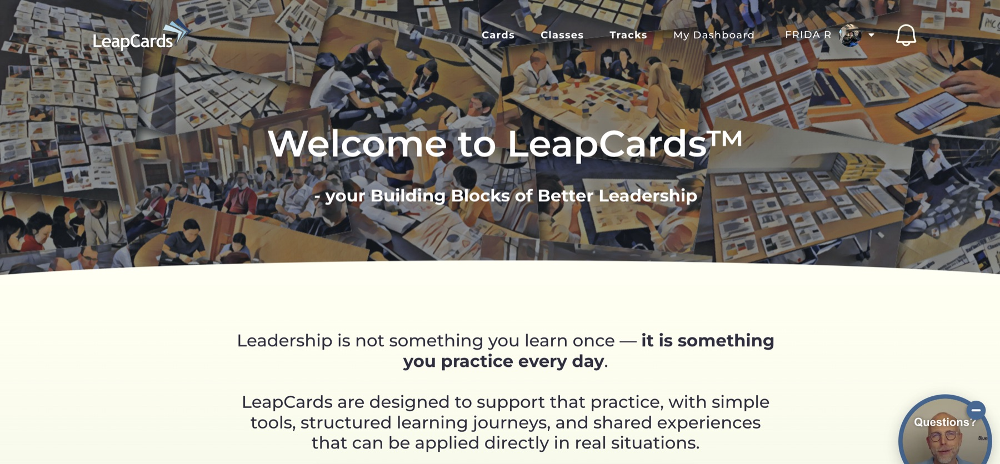
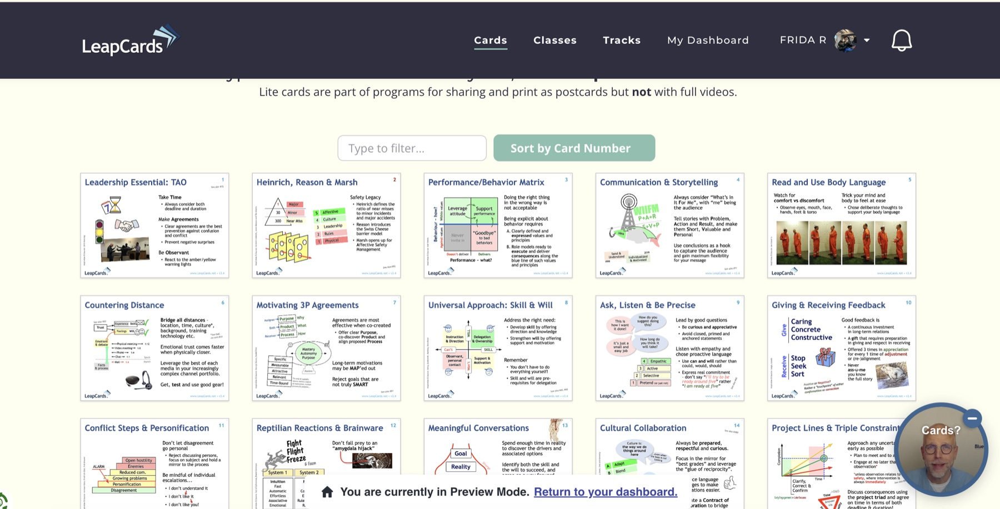
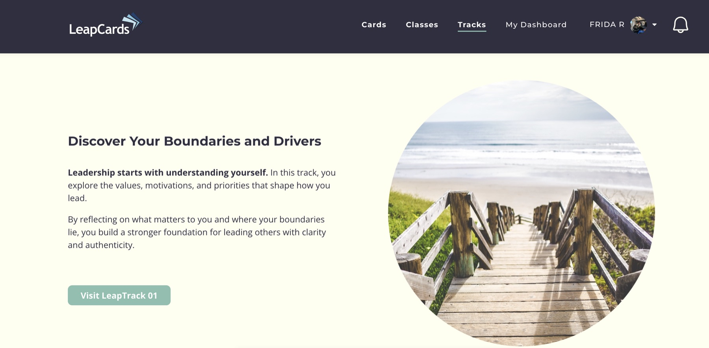
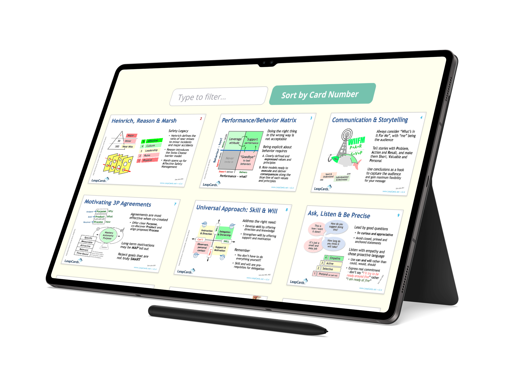
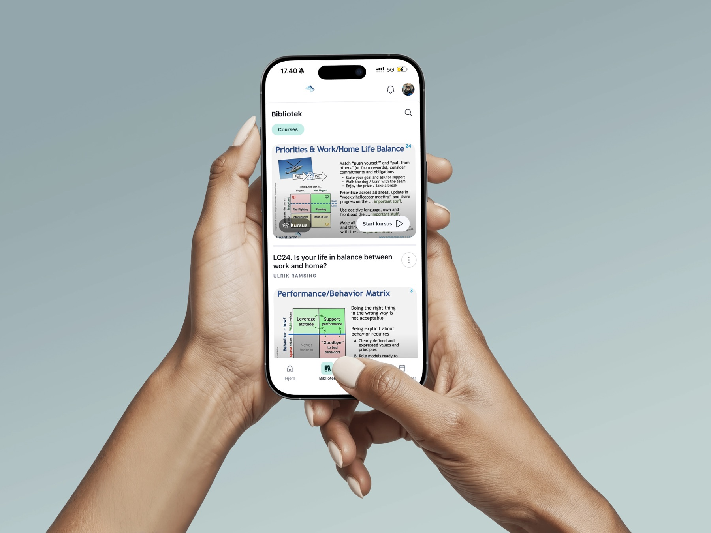

Opdateret design
Jeg opdaterede hjemmesidens udtryk med afsæt i LeapCards' eksisterende identitet og læringsunivers.
Arbejde / Redesign af hjemmeside
Jeg redesignede LeapCards.net med en mere tidssvarende brugerflade og beholdt forbindelsen til den visuelle identitet, brugerne allerede kendte.

Overblik
LeapCards havde brug for en opdateret hjemmeside, der var lettere at finde rundt på uden at miste sit særpræg. Jeg arbejdede især med at strukturere indholdet og gøre kort, kurser og læringsforløb mere overskuelige.
Efter redesignet blev min rolle udvidet til også at omfatte opfølgning på indholdet. Jeg arbejder nu med, hvordan indholdet bliver brugt, og hvordan vi løbende kan forbedre oplevelsen.
Nedslag
Jeg opdaterede hjemmesidens udtryk med afsæt i LeapCards' eksisterende identitet og læringsunivers.
Kort, kurser og læringsforløb fik en mere overskuelig præsentation, så det er lettere at finde næste skridt.
Med 923 brugere på platformen handler arbejdet også om at følge indholdets brug og lære af den.
Billeder




Videre
LeapCards er det første arbejdsprojekt her i porteføljen. Senere følger Leaptrack og Nestle LP med flere eksempler på platformdesign, digitale forløb og landingssider.
Tilbage til alle projekter